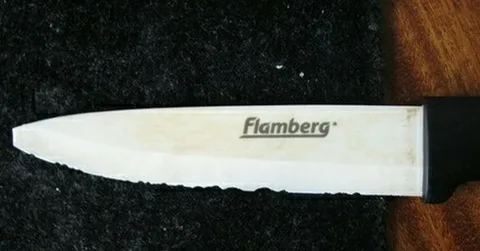
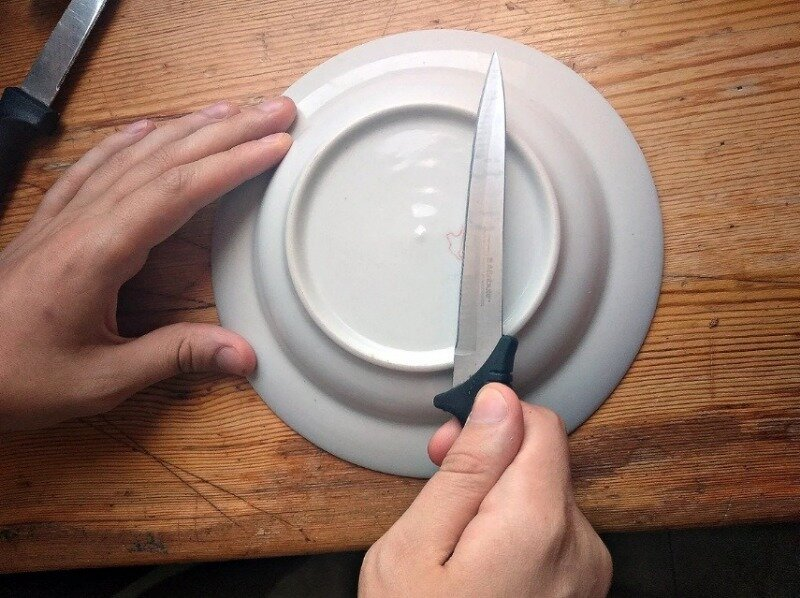
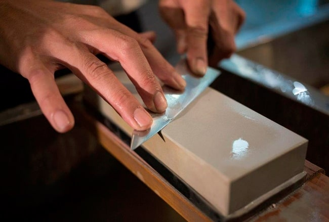

Почему нож быстро тупится
Любой рабочий нож со временем притупляется на кухне причинами этого чаще всего становятся: пластиковых, стеклянных, керамических разделочных досок; костей и сухожилий; чистка рыбы: сталь стачивается о чешую; очищение грязных овощей: комки грязи и песок стачивают кромку; хранение вперемешку со столовыми приборами.
Как заточить нож дома (без точильного камня)
Как заточить нож об дно керамической тарелки или чашки
Это скорее способ правки чем заточки, но когда под рукой нет ничего - у вас не будет возможности выбирать. Просто переверните посуду - снизу вы найдете шероховатый ободок, который отлично поправит вам лезвие. Проведите режущей кромкой по ободку, каждый раз меняя сторону лезвия. Подойдет не только посуда, но и любые другие керамические предметы с шероховатой поверхностью.
Как точить ножи камнем
Заточить нож можно с помощью точильного камня. Для этого обычно используют оселок — абразивный инструмент в виде прямоугольного мелкозернистого бруска.Точильным камнем лезвие ножа стачивается гораздо меньше, чем на других приспособлениях. Кухонные ножи обычно затачиваются под углом 22,5°.
Инструкция:
1 Положите точильный камень на влажное полотенце, разложенное на ровной поверхности.
2 Возьмите нож за рукоятку под углом 22,5°.
3 Медленно проведите лезвием ножа по стороне с грубым абразивом, начиная с пяты и заканчивая кончиком.
4 Повторите это действие пять раз.
5 Переверните нож на другую сторону и заточите другую сторону лезвия тем же движением, повторяя 5 раз.
6 Верните нож на первую сторону и проведите ножом от кончика к пяте.
7 Повторите это движение пять раз.
8 Переверните на обратную сторону и заточите лезвие от кончика к пяте пять раз.